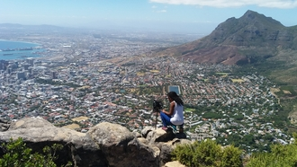

Londiwe cele
which city

Zhangjiajie Glass Bridge is the world’s longest and highest brigde, its really looks scary and terifying well that my kind of fun. you can have a brand new experience on the Glass Bridge to look down of the verdant view on the transparent glass floor. the very long and steep walk way, super narrow way at Yixiantian, and other beautiful natural scenery will take you to tour in excitement, enjoyment,
A foreign language
I would like to learn Spanish just because i think it romantic
| English | Spanish |
|---|---|
| I love you | te amo |
| you're beautiful | eres hermosa |
| pure heart | Corazón puro |
Historical places

City hall
- The tower of the City Hall has a Turret Clock which strikes the hours and chimes the Westminster quarters.
- The City Hall's carillon was installed as a World War I war memorial, with 22 additional bells being added in 1925 with the visit of the Prince of Wales.
- The building was designed as the result of a public competition

district six meausem
- District Six was a multi working-class area just off the centre of Cape Town.
- Before being torn apart by the apartheid
- It was named the sixth district of Cape Town in 1867.

Parliament
- Queen Victoria granted permission for the establishment of a parliament in the Cape Colony in 1853.
- The old Assembly chamber became the Parliamentary Dining Room
- Further constitutional changes moved the centre of power away from the old building and towards the newer wing.